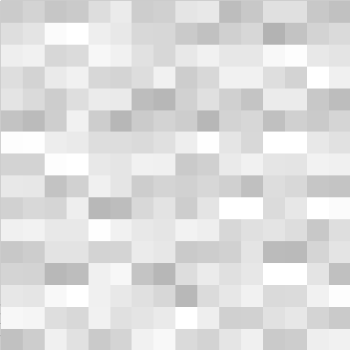
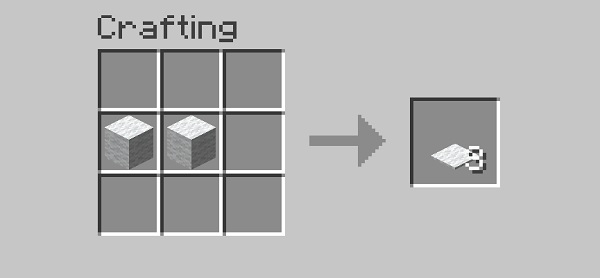
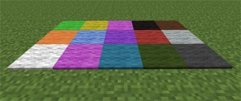

mesa de crafteo con
mesa de crafteo con 
lana.
La alfombra es un bloque usado principalmente para decorar pero tambien es usado en algunas granjas
Se puede conseguir crafteandola en una  mesa de crafteo con

Pero tambien las puedes encontrar en algunas estructuras como la mansión
Existen distintas variantes de la alfombra, estas variantes simplemente cambia el color
Estas variantes se consiguen poniendo la alfombra y un tinte en una mesa de crafteo
